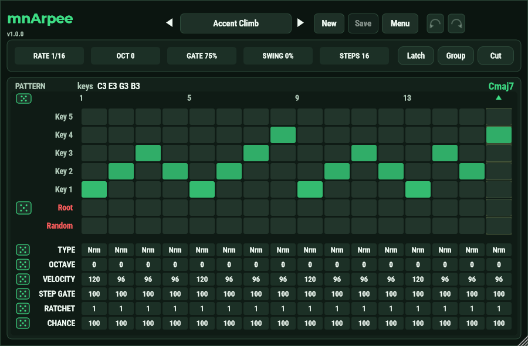
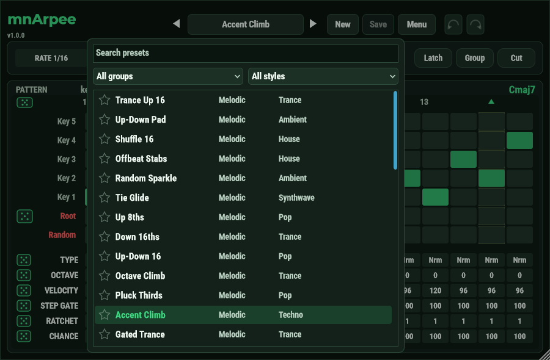
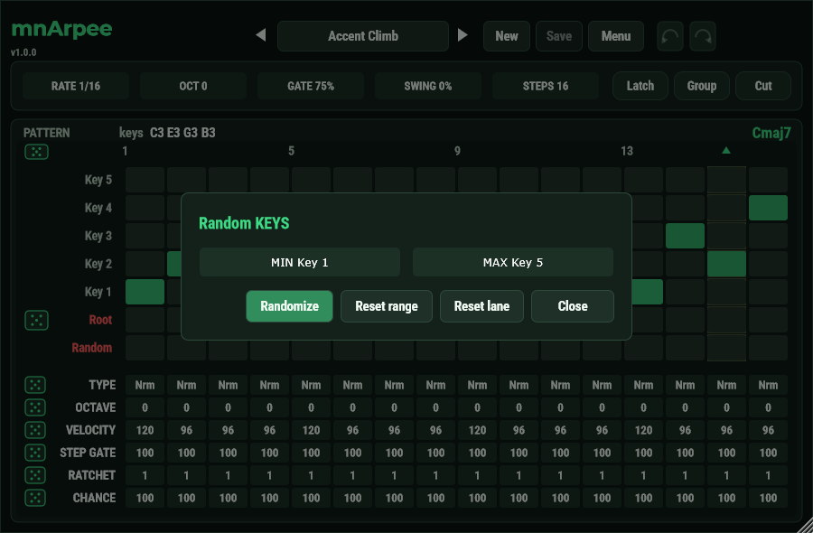

Free pattern arpeggiator · VST3
mnArpee – free pattern arpeggiator plugin for Windows (VST3)
Hold a chord. Play your pattern.
No fixed arp modes: you draw the whole pattern in a step matrix, and mnArpee plays it with the notes you hold. Bass lines, ratchets, random dice and 37 ready-made presets.
- v1.0.0
- VST3 · Windows x64
- Free and open source (AGPL-3.0)

How it works
mnArpee is a MIDI effect. It makes no sound itself: it sits in front of your synth.
Hold a chord
Your MIDI keyboard sends the notes. They become Key 1 to Key 5, sorted by pitch.
The pattern plays
Every step of the pattern picks a key (or the chord root), with its own octave, velocity, gate and ratchet.
Your synth plays it
Put any synth after mnArpee. The steps lock to the song position of your DAW.
Draw the pattern you hear
Everything you need for arps and bass lines, and nothing that gets in the way.
A step matrix, not arp modes
Click cells to put each step on Key 1 to 5, the chord root or a random key. Up to 32 steps.
Lanes for every step
Type, octave, velocity, step gate, ratchet and chance, one box per step. Drag, or use the mouse wheel.
Bass lines
The Root row plays the root of the held chord. One dice makes a random bass line with accents, ghost notes and glides.
Dice with ranges
Every lane has a dice. Right-click it to set the smallest and largest random value.
37 presets, and a real browser
Melodic and Bassline presets in ten styles. Search, filters, favourites and your own presets.
Undo, tools, zoom
Undo and redo, generate keys, shift, reverse, copy and paste a pattern, and a zoomable window.
Everything in the box
The full feature list of mnArpee 1.0.0.
Pattern
- Up to 32 steps per pattern; step types Off, Normal, Rest, Tie (legato) and Random.
- Per step: key (Root, Key 1 to 5), octave -3 to +3, velocity, ratchet 1 to 4, a step gate of 10 to 400 % and a chance of 5 to 100 %.
- Pattern: rate 1/64 to 3/8, gate 1 to 125 %, swing -50 to +50 %, octave -2 to +2 and 0 to 32 steps.
- Steps 0 is MIDI thru and 1 is quantized thru.
Playing
- Held notes are sorted by pitch, every note a key (octave doubles too), up to five keys; the PATTERN strip shows which are used and which are left out.
- A key that is not held plays the chord root, so every pattern fits every chord. The chord name (Cmaj7, Am, C/E, ...) is shown.
- Steps lock to the song position of the host; free-run when the transport is stopped.
- Latch, Group (the same note in several octaves is one key) and Cut (the notes stop with the last key), all host parameters; sustain pedal and panic. Other MIDI (CC, pitch bend, aftertouch) passes through.
- Sample-accurate MIDI and an engine that never allocates on the audio thread.
Presets
- 37 read-only factory presets in two groups, Melodic and Bassline, with ten style tags.
- A browser inside the plugin window with search, group and style filters and favourites.
- Save as, Revert, Rename, Style, Import, Export, Show in folder and Delete; your own presets are files shared by every project.
- A preset switches at the end of the running pattern. The host's 128 programs mirror the presets.
- A project stores the active preset with its edits, so it sounds the same on another computer.
Workflow
- Undo and redo for every step edit; the plugin takes no keyboard shortcuts, so it never steals a key from the DAW.
- Pattern tools: set all steps, generate keys (Up, Down, Up-Down, Down-Up, Converge, Random), shift, reverse, clear, copy and paste.
- Random ranges for every lane and a random bass line, kept with the project.
- A dark, flat window with the version under the title, zoom from 80 to 200 %.
- Free and open source under the AGPL-3.0.
37 factory presets
Ready to play, in two groups. All of them are read-only: edit one and use Save as to keep your version.
Melodic (the held keys)
- Trance Up 16
- Up-Down Pad
- Shuffle 16
- Offbeat Stabs
- Random Sparkle
- Tie Glide
- Up 8ths
- Down 16ths
- Up-Down 16
- Octave Climb
- Pluck Thirds
- Accent Climb
- Gated Trance
- Cascade
- Skipping Thirds
- Triplet Up
- Random 8ths
- Swing Pluck
- Echo Stabs
- Wide Arp
- Slow Pad Arp
- Tie Climb
Bassline (only the root)
- Bass 8ths
- Bass 16ths
- Offbeat Bass
- Octave Bass
- Trance Bass
- Pumping Bass
- Rolling Bass
- Dotted Bass
- Long Sub
- Glide Bass
- Galloping Bass
- Funk Bass
- Half-time Bass
- Swing Bass
- Ghost 16ths
The keys and the lanes
A step does not say "C": it says "Key 1", "Key 2", and so on, and the keys are the notes you hold.
Keys
- Key 1 to Key 5 are the held notes, lowest first, up to five.
- Root plays the root of the held chord (triads, sus, sevenths, power chords, inversions).
- Random picks one of the keys.
- A key you do not hold plays the root instead.
Header values
- RATE 1/64 – 3/8
- OCT -2 – +2
- GATE 1 – 125 %
- SWING -50 – +50 %
- STEPS 0 – 32
RATE, OCT, GATE, SWING and STEPS belong to the active preset.
Lanes
TYPENormal note, Off, Rest, Tie (legato) or a random key.OCTAVE-3 to +3 octaves for the step.VELOCITY1 to 127.STEP GATEThe note length of the step: 10 to 400 % of the pattern's GATE, in steps of 5 %.RATCHET1 to 4: the step plays its note that many times.CHANCE5 to 100 %: the chance that the step plays at all.
Styles
Every preset carries style tags that the browser can filter by.
- Trance
- House
- Techno
- Disco
- Funk
- Pop
- Synthwave
- Ambient
- Chill
- Dubstep
A look inside
A dark, flat window: the matrix for the keys, and the lanes under it.


System requirements
- Windows 10 or 11, 64-bit (installer for the VST3).
- A DAW or host that loads VST3 plugins.
- A MIDI keyboard or controller (or the DAW's piano roll) to hold the chords.
- A synth or sampler after mnArpee, because mnArpee itself makes no sound.
- macOS and Linux are not supported yet.
Frequently asked questions
What is mnArpee?
mnArpee is a free pattern arpeggiator plugin (VST3) for Windows. You hold a chord and it plays a pattern of single notes. There are no fixed arp modes: you draw the pattern step by step in a matrix, or start from a factory preset.
Is mnArpee free?
Yes. mnArpee is free software under the GNU Affero General Public License v3.0, and the source code is open on GitHub.
Does mnArpee make sound by itself?
No. It is a MIDI effect: it turns the notes you hold into a pattern, and the synth or sampler after it plays the sound. Put it on a track, before your synth.
Which operating systems does it run on?
There is an installer for Windows 10 and 11 (64-bit). macOS and Linux are not supported yet.
Which DAWs can I use it in?
mnArpee is a standard VST3 plugin, so a DAW that hosts VST3 plugins on Windows can load it. How MIDI is routed to the next plugin differs between DAWs; the user guide has the steps.
What do Key 1 to Key 5 mean?
They are the notes you hold, sorted by pitch, up to five. A step says which key it plays, so the same pattern fits any chord. A key you do not hold plays the root of the chord instead.
How do I make a bass line?
Pick a Bassline preset, or put steps on the Root row. Root plays the root of the held chord. The dice at the Root row makes a random bass line with accents, ghost notes, rests, glides, octave jumps and ratchets.
What is the difference between GATE and STEP GATE?
GATE in the header is the note length of the whole pattern, as a percentage of a step. STEP GATE is a lane that scales it for single steps, from 10 to 400 %. The length of a note is GATE times STEP GATE.
Where are my presets saved?
Your presets are files in Documents\MNAudio\mnArpee\User, shared by every project. A DAW project also stores the active preset, with its edits, so it sounds the same on another computer.
Does it use keyboard shortcuts?
No. The plugin takes no keys at all, so it can never collide with the shortcuts of your DAW.
Who made mnArpee?
mnArpee is made by Miklós Németh as a vibecoding project: the idea, the taste and the decisions are his, and the code is written together with an AI.
Get mnArpee
Free, with the source code open. The Windows installer is the quick way in.
Windows (64-bit)
- Download mnArpee-1.0.0-win-x64-setup.exe from the latest release.
- Run it. The VST3 goes to
Common Files\VST3\MNAudio. - Rescan plugins in your DAW and put mnArpee on a track, before your synth.
Docs and source
- User guide (English)
- User guide, PDF (English)
- User guide (Hungarian)
- User guide, PDF (Hungarian)
- Source code and build instructions
- Report a bug or ask for a feature
- License (AGPL-3.0)
macOS and Linux are not supported yet.